Condition Helpers: The Small Verbs Behind compute_cols()
ksTFL Development Team
2026-10-03
Source:vignettes/Condition_Helpers_with_ksTFL.Rmd
Condition_Helpers_with_ksTFL.Rmd
Why these helpers exist
compute_cols() is the workhorse of ksTFL formatting: you
hand it a condition and one or more actions (c_style(),
c_addrow(), c_glue(), …), and every row
matching the condition gets treated. The obvious conditions are easy —
AVAL > 12, TRTARM == "Treatment A". But
most of what makes a clinical table read well is not about
individual values. It is about position: this is where
a new SOC block starts, this is the last row of the headache run, this
is a subtotal line, this should look striped.
Plain column comparisons cannot express position. You could bolt it
on with dplyr — mutate(is_first = !duplicated(SOC)), a
helper column, another one for the zebra flag, and hide them all — and
then your “flat analyst frame” quietly grows a tail of tags whose only
purpose is to describe layout. ksTFL takes the other route: a handful of
small functions that answer positional questions directly against the
table data, inside the condition itself.
There are seven of them, and they split into three families:
| Family | Helpers | Question they answer |
|---|---|---|
| Absolute |
firstRow(), lastRow()
|
Is this the first / last row of the whole table? |
| Periodic |
everyNth(n), rowNumber()
|
What number is this row? Does it fall on a beat? |
| Run-based |
firstOf(...), lastOf(...),
firstOfBlock(col, n, offset)
|
Where does a run of equal values begin and end? |
One idea holds the whole third family together, and it is worth stating up front because it is the single most common source of surprise:
firstOf()/lastOf()/firstOfBlock()work on runs of contiguous equal values (run-length encoding), not on distinct values. In a frame sortedA, A, B, B, A, the functionfirstOf(GROUP)isTRUEon rows 1, 3 and 5 — the second block ofAs is a new run, so it gets a new “first”.
This is a feature, not a wart: ksTFL’s rendering contract is “the
package paints your rows in the order you give them”. You
arrange() the analyst frame upstream into exactly the
reading order you want, and the run helpers then become a natural
description of that order — “the first row of this visible block” — with
no bookkeeping at render time. If your data really is grouped, sorted,
and contiguous (and in clinical tables it almost always is), run
semantics and “group” semantics coincide. When they don’t, the FAQ entry
“Why does firstOf() mark more rows than I expected?” is the
place to start.
All seven helpers are usable only inside the
cond argument of compute_cols() (they
are not exported to the global namespace), and they always look at the
raw data, never at display text that earlier actions
have already glued or cleared. Keep those two fences in mind and
everything below falls into place.
Absolute markers: firstRow() and
lastRow()
The simplest pair. They mark exactly one row each — the top and the bottom of the table — and they are the cleanest way to hang structural formatting: the booktabs-style rule under the header, the closing rule after the last result.
A treatment-emergent AE table with zebra banding on the odd rows
(everyNth(2) marks rows 1, 3, 5, …) and heavy rules at the
two absolute boundaries:
spec <- create_table(ae_by_pt) |>
add_title("Table 1. Treatment-emergent adverse events by preferred term.") |>
define_cols(SOC, label = "System organ class", colWidth = "24%") |>
define_cols(PT, label = "Preferred term", colWidth = "22%") |>
define_cols(c(TRTA, TRTNT, TOTAL),
label = c("Treatment A<br>(N = 421)", "Treatment B<br>(N = 415)",
"Total<br>(N = 836)"),
valueStyleRef = "ac", colWidth = "14%") |>
# banding: everyNth(2) is TRUE on rows 1, 3, 5, 7 ...
compute_cols(everyNth(2), c_style(everything(), styleRef = "bg_gray")) |>
# structure: one rule under the header, one under the very last row
compute_cols(firstRow(), c_style(everything(), styleRef = "bt")) |>
compute_cols(lastRow(), c_style(everything(), styleRef = "bb"))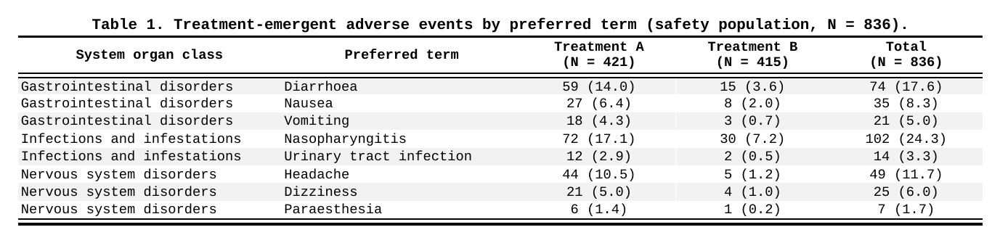
Notice how the three rules read like a caption: band the odd
rows, rule the top, rule the bottom. Three separate
compute_cols() calls, each doing one visually distinct
thing — which is exactly how you want to be able to edit them six months
from now.
The same pair works whenever you need a boundary that is
absolute rather than value-driven — a lab table where the first
measurement row should be separated from the header no matter what the
data says. Just remember that the marker is one row: if a table is
paginated (isPaging), firstRow() still fires
only on the true first row of the data, not on the first row of each
page.
Run boundaries: firstOf() and
lastOf()
The core pair. firstOf(col) is TRUE at the
first row of every run of equal values in col;
lastOf(col) mirrors it at the end of the run. Multiple
columns are allowed — firstOf(A, B) marks runs of the
pair, which is a handy way to say “this combination is new”
without touching the data.
The most natural use is grouping structure without group columns. An AE incidence table where every SOC block should open and close with a thin rule:
spec <- create_table(ae_incidence) |>
define_cols(SOC, label = "System organ class", colWidth = "30%") |>
define_cols(PT, label = "Preferred term", colWidth = "26%") |>
define_cols(INC, label = "Incidence<br>(%)", valueStyleRef = "ac", colWidth = "12%") |>
define_cols(SEV, label = "Worst severity", valueStyleRef = "ac", colWidth = "16%") |>
# a run of identical SOC starts here -> open the block
compute_cols(firstOf(SOC), c_style(everything(), styleRef = "bt_th")) |>
# ...and ends here -> close it
compute_cols(lastOf(SOC), c_style(everything(), styleRef = "bb_th"))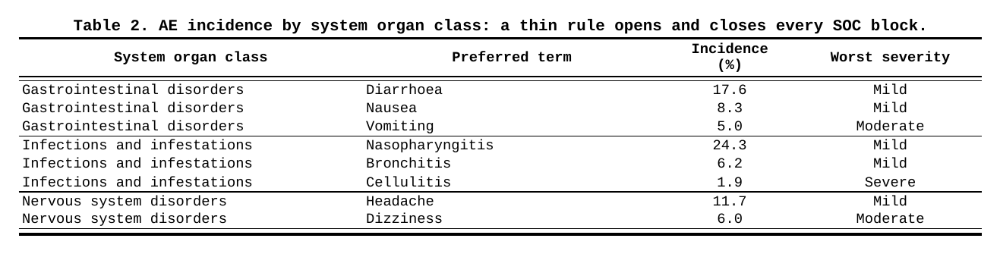
The repeated SOC text is still visually noisy here — two more lines
fix it. This is the classic dedupe idiom: negate firstOf()
and blank what it protects.
spec <- spec |>
compute_cols(!firstOf(SOC), c_clear(SOC))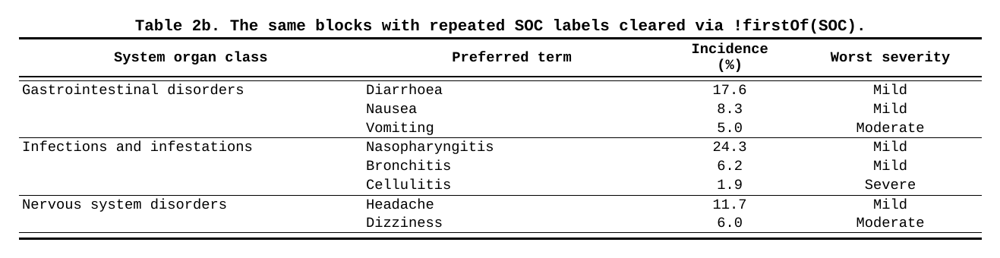
A demographic table shows the multi-column variant properly, where two different notions of “is this row new?” live in two adjacent columns: age group changes slowly, treatment changes twice per age group. Blanking each label against its own run key gives the stepped reader’s-eye layout:
spec <- create_table(demog) |>
define_cols(c(AGEGR1, TRTARM), label = c("Age group", "Treatment"), colWidth = "18%") |>
define_cols(STAT, label = "Statistic", colWidth = "14%") |>
define_cols(c(V1, V2), label = c("Visit 1<br>(Day 1)", "Visit 2<br>(Week 12)"),
valueStyleRef = "ac", colWidth = "14%") |>
# the age label lives only at the top of its own run
compute_cols(!firstOf(AGEGR1), c_clear(AGEGR1)) |>
# the treatment label re-appears at every new (age x treatment) combination
compute_cols(!firstOf(AGEGR1, TRTARM), c_clear(TRTARM))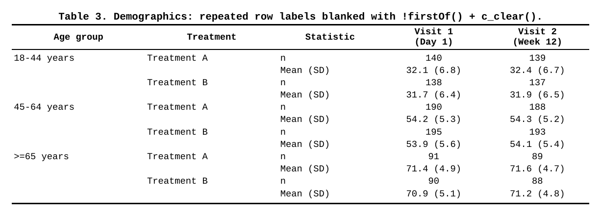
Why did Treatment A re-appear for the 45-64 group even
though it is the same arm? Because firstOf(AGEGR1, TRTARM)
describes a pair-run, and the run started over when the age
group changed. One condition, no helper columns.
lastOf() earns its keep at the other end of the run —
closing rules (above), subtotal insertion (later), and anywhere you must
act “after the group is done” rather than “before it starts”.
Beat and number: everyNth() and
rowNumber()
everyNth(n) is a tiny convenience: TRUE
every n rows counting from row 1
(n = 2 marks rows 1, 3, 5 …). Two things to know. First, it
counts rows, not groups or records — with grouped data
a “zebra” built from everyNth(2) stripes the
table, which is usually what you want, but does not respect
block edges; if you need banding within each block only,
combine with the run helpers (see the combination section). Second, when
you want the other phase of the stripe, there is no
everyNth(2, offset = 1) — you write the arithmetic
yourself, and that is where rowNumber() comes in.
rowNumber() returns the row index (1-based) and composes
in ordinary expressions: comparisons, modulo, ranges.
# even-row banding: the complement of everyNth(2)
compute_cols(rowNumber() %% 2 == 0, c_style(everything(), styleRef = "bg_gray"))
# "the first five rows are the top-5 AEs" -- a position rule
compute_cols(rowNumber() <= 5, c_style(PT, styleRef = "b"))
# "everything except the boundary rows" -- a range
compute_cols(rowNumber() > 1 & rowNumber() < 12, c_style(PARAM, styleRef = "ind1"))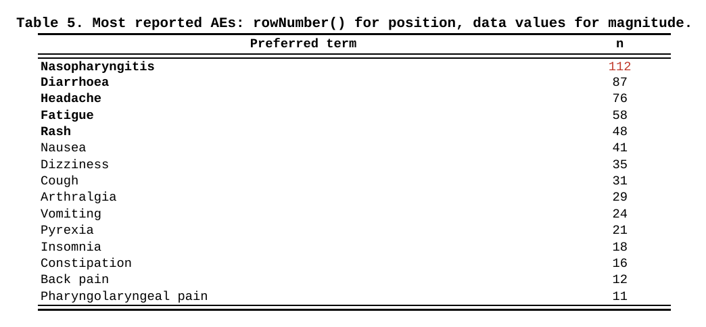
A position rule (rowNumber() <= 5) and a value rule
(N >= 100) live comfortably side by side — this table
shows both: the first five rows are bold because they are the top five,
and 112 is red because it crosses a threshold. Pre-sorting
the frame is what makes the position rule meaningful; the helpers then
simply read the layout you arranged.
Periodic runs: firstOfBlock()
firstOfBlock(col, n = 1, offset = 0) is
firstOf() with a metronome: it marks the first row of every
n-th run of col — counting
runs of equal values, skipping the first block, and starting
after offset blocks. The mental model is “give me a beat
that respects my blocks, not my rows”.
A compact AE table where you want breathing room between pairs of SOC blocks rather than between every one of them:
spec <- create_table(ae_compact) |>
define_cols(SOC, label = "System organ class", colWidth = "34%") |>
define_cols(PT, label = "Preferred term", colWidth = "30%") |>
define_cols(ALL, label = "Any AE<br>(n (%))", valueStyleRef = "ac", colWidth = "16%") |>
# first row of blocks 3, 5, ... gets an inserted spacer row above it
compute_cols(firstOfBlock(SOC, n = 2), c_addrow(pos = "above"))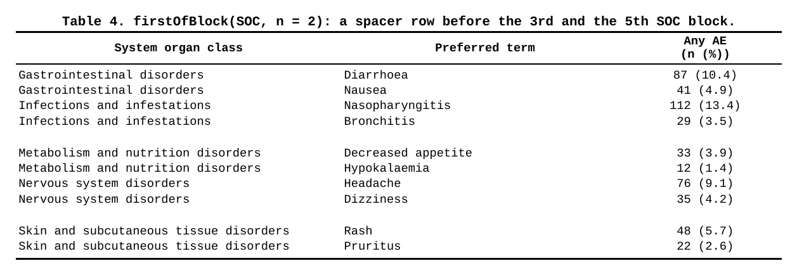
The counting rule is the part to pin down: with five SOC blocks,
firstOfBlock(SOC, n = 2) fires inside blocks 3 and
5. The first block never fires (nothing to separate it from),
and every second block after that does. offset rotates the
beat: offset = -1 moves it to the even blocks (2 and 4 —
use it when the first gap should already be visible),
offset = 1 pushes it one block further (4 and 6). Think of
it as “skip offset extra blocks before the first marked
one” and the three cases line up.
A typical honest use is a “block every other group” layout on long PK or lab tables, where grouping rows into visual pairs of visits or periods is cheaper than restructuring the data.
Combinations: where the helpers earn their keep
Individually the helpers are one-liners. Together with the actions they cover most of what a real table needs from conditional formatting, without a single tag column. The five combinations below are the ones that show up in production code over and over.
1. Footnote markers once per group: firstOf() +
c_glue()
A PT reported at several grades should carry the footnote marker
a exactly once, at its first appearance — and the repeated
PT rows usually blank their label anyway. firstOf(PT) does
the run work; c_glue() writes the marker:
spec <- create_table(ae_by_grade) |>
define_cols(c(SOC, PT, GRADE), label = c("SOC", "PT", "Grade"), colWidth = "18%") |>
define_cols(N, label = "n", valueStyleRef = "ac", colWidth = "8%") |>
compute_cols(firstOf(PT), c_glue(PT, "after", text = "<sup>a</sup>")) |>
compute_cols(!firstOf(PT), c_clear(PT)) |>
add_footnote("<sup>a</sup>PTs reported in more than one grade.")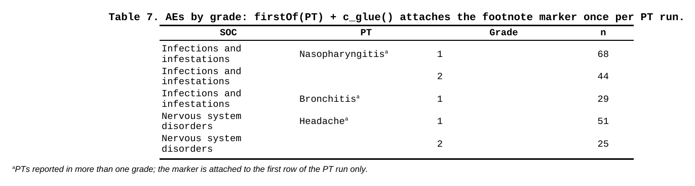
Inline markup (<sup>, <i>, …)
is parsed inside glue text, so the marker renders as a real superscript.
Note the pair firstOf / !firstOf on the same
column — the positive marks where to glue, the negated one clears the
rest; two honest halves of one layout rule.
2. Block headers from a hidden column: firstOf() +
c_addrow()
The signature ksTFL idiom for sectioned tables. The analyst frame
keeps SOC as a plain column; you hide it and let its
first-row boundary become a real header row:
spec <- create_table(ae_blocks) |>
define_cols(SOC, label = "SOC", isVisible = FALSE) |>
define_cols(PT, label = "Preferred term", colWidth = "40%") |>
define_cols(c(TRTA, TRTNT, TOTAL),
label = c("Treatment A<br>(N = 421)", "Treatment B<br>(N = 415)",
"Total<br>(N = 836)"),
valueStyleRef = "ac", colWidth = "13%") |>
compute_cols(firstOf(SOC),
c_addrow(pos = "above", value_from = SOC, styleRef = "grp_hdr"))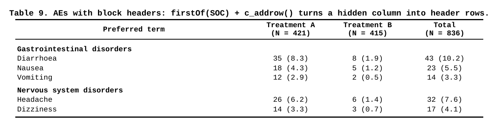
value_from = SOC copies the raw value into the
synthetic row, and the styleRef belongs to the added row
itself — later blocks will not repaint it. The price of admission: an
added row is a single full-width cell, which is great for headers and no
good for subtotals with per-column numbers. For those, see combination
3.
3. Subtotals assembled from the data: lastOf() +
c_glue() + c_style()
Subtotal numbers belong to the data — the analyst computes them and
appends a total row per block (a run member with an empty PT). Then
lastOf(SOC) marks exactly those rows, because the subtotal
extends its block’s run, and glue writes the label straight onto the
still-present SOC value:
spec <- create_table(ae_subtotals) |>
define_cols(SOC, label = "System organ class", colWidth = "26%") |>
define_cols(PT, label = "Preferred term", colWidth = "24%", missings = "") |>
define_cols(c(TRTA, TRTNT, TOTAL),
label = c("Treatment A<br>(N = 421)", "Treatment B<br>(N = 415)",
"Total<br>(N = 836)"),
valueStyleRef = "ac", colWidth = "13%") |>
# keep SOC text at block top; subtotal rows (empty PT) keep theirs untouched
compute_cols(!firstOf(SOC) & !is.na(PT), c_clear(SOC)) |>
# the subtotal IS the last row of the run: prepend the label, bold, close
compute_cols(lastOf(SOC),
c_glue(SOC, "before", text = "Subtotal: "),
c_style(everything(), styleRef = f_combine("b", "bb")))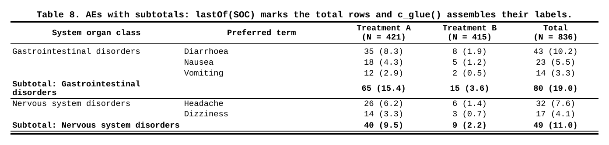
Two subtleties worth naming. The first compute_cols()
deliberately excludes the subtotal rows from clearing —
!is.na(PT) — because the next block’s c_glue()
decorates the text visible at action time, and on those rows the visible
SOC is the label ingredient. The row’s own run membership still
comes from the raw data: conditions read original values,
c_clear() only blanks the painting. When the numbers must
live in their columns (not in a synthetic full-width row), the frame
holds them and the helpers merely point at them.
4. Gaps between blocks, but never at the edge: lastOf()
+ !lastRow()
Plain lastOf(SOC) + c_addrow(below) adds a gap after
every block including the final one — a stray empty row before
your footnotes. Compose the boundary helpers to express “between, not
after”:
spec <- spec |>
compute_cols(lastOf(SOC) & !lastRow(), c_addrow(pos = "below")) |>
compute_cols(firstOf(SOC), c_style(SOC, styleRef = "b"))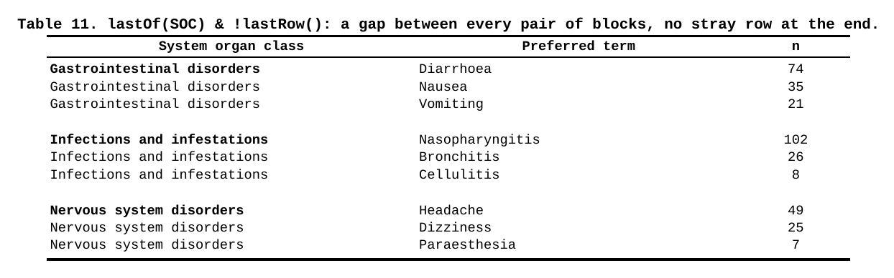
One run helper for the block edge, one absolute helper for the table edge, intersected in plain R logic. There is no dedicated “gap between groups” verb — the point of the design is that you do not need one.
5. Page breaks on block boundaries: firstOf() +
rowNumber() + c_pageBreak()
Long safety exhibits often demand “one SOC per page”. The break belongs on the run start, minus the first row of the table — an absolute marker guarding the value boundary:
spec <- create_table(ae_socs) |>
define_cols(SOC, label = "System organ class", colWidth = "34%") |>
define_cols(PT, label = "Preferred term", colWidth = "30%") |>
define_cols(N, label = "n", valueStyleRef = "ac", colWidth = "10%") |>
compute_cols(firstOf(SOC) & rowNumber() > 1, c_pageBreak())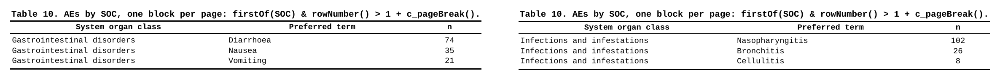
Without the rowNumber() > 1 guard the renderer
receives a page break on the very first row and you get a blank lead
page — the same trick works with firstOfBlock() for “every
second block on a new page”. The header row repeats on the new page by
default, so each block arrives with its own context.
All of them at once
A production safety summary: hidden SECT column
generates bold section headers (firstOf +
c_addrow), every section but the last closes with a rule
(lastOf + !lastRow), and the Total arm is
bolded by plain value logic side-by-side with the run conditions:
spec <- create_table(safety_summary) |>
define_cols(SECT, label = "Parameter", isVisible = FALSE) |>
define_cols(TRTARM, label = "Treatment", colWidth = "30%") |>
define_cols(c(N, EVT), label = c("n", "Events<br>(n (%))"), valueStyleRef = "ac",
colWidth = "20%") |>
compute_cols(firstOf(SECT),
c_addrow(pos = "above", value_from = SECT, styleRef = "grp_hdr")) |>
compute_cols(lastOf(SECT) & !lastRow(), c_style(everything(), styleRef = "bb")) |>
compute_cols(TRTARM == "Total", c_style(c(TRTARM, N, EVT), styleRef = "b"))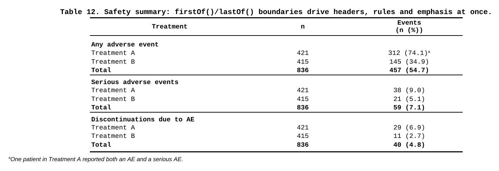
Three compute_cols() calls, one per visual feature — and
the entire table is described in terms a reviewer can verify against the
spec document line by line. No tag columns in the data, no
post-processing pass, no template surgery.
Honest edges
Things to know before your first surprise:
-
Run, not unique. All of
firstOf/lastOf/firstOfBlockcount contiguous runs. Non-sorted data with re-appearing values will look “over-marked”. Sort upstream — the renderer never will. -
Raw data for conditions, display state for glue
sources. Conditions and
value_fromsee the original values;c_clear()/c_glue()only change the painting — a later condition still matches a cleared cell’s underlying value. Butc_glue(glue_col = ...)copies the cell’s text as it stands at action time: gluing a source that an earlier action cleared appends nothing. - One added row = one full-width cell. Great for headers and spacers; put numeric subtotals in data rows instead (combination 3).
-
value_fromlands in the first cell of the synthetic row; there is no per-cell mapping across the added row. -
Paginating tables:
firstRow()/lastRow()refer to absolute data positions, not per-page positions;everyNth()keeps counting across page breaks as well. -
NA in a condition is an error, not a skip — guard
with
!is.na(x) &when your frame can carry missing grouping values.
Reference table
| Helper | Marks | Typical use |
|---|---|---|
firstRow() |
row 1 | header rule, table-level emphasis |
lastRow() |
final row | closing rule, grand total styling |
everyNth(n) |
rows 1, n+1, 2n+1, … | zebra banding |
rowNumber() |
(returns indices) | ranges, modulo, top-N position rules |
firstOf(cols) |
start of each run | dedupe, block opening, headers, markers |
lastOf(cols) |
end of each run | closing rules, subtotal insertion |
firstOfBlock(col, n, offset) |
start of every n-th run | periodic block gaps |
They are condition-only — available nowhere else in the DSL — and all
of them are pure R against the frame you passed to
create_table(). For action semantics and ordering
(c_merge before c_clear before
c_glue, style conflict resolution, addrow stacking), see Advanced StyleRows and Conditional
Formatting; for the run-semantics gotcha in depth, see FAQ #13.